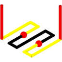
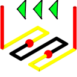
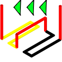
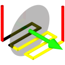

Edit toolpath
Trim toolpath interactively. → |
Select a toolpath in the graphics area. Then open the context menu by right-clicking. Select the Edit toolpath command. If the command is not offered, the toolpath cannot or can no longer be trimmed interactively.
The interactive trimming of toolpaths can also be accessed in the hyperMILL® browser, in the jobs on the Boundary tab.
→
Start: Start the Edit toolpath dialog to edit the toolpath interactively.
Icon | Command | Description |
|---|---|---|
 | Trim by points | SelectUse → and → to select the two toolpath points that comprise the required section of the toolpath. Use Invert selection to invert the current selection. If the To begin / To end option has been selected, only the First toolpath point can be selected. The selection is made from the selected point to the start/end of the toolpath. |
 | Untrim by points | |
 | Trim by group | SelectUse → to select a group of G1/G2/G3 toolpath points between two G0 toolpath points. Use Invert selection to invert the current selection. |
 | Untrim by group | |
 | Trim by selection | ModesSelect one of the available Modes. Trimming is performed from the direction of the current view. No toolpath points are used for trimming. The toolpath is trimmed exactly where the selection and toolpath intersect. Use Invert selection to invert the current selection. |
 | Untrim by selection | |
 | Select window | Select a toolpath section within a rectangular selection area. |
 | Select lasso | Select a toolpath section within an area specified by a polygonal chain. |
Select circle | Select a toolpath section within a circular selection area. ModesC. + P.: Enter the middle point and point on the circumference of the circular selection area. C. + R.: Enter middle point and radius. The number of selected elements is displayed. | |
Select segment | Select elements arranged in an arc. SelectCenter: Click the center of the arc with the left mouse button or snap a position or select a point. Vertices: Click two diagonally opposite corners with the left mouse button or snap positions or select two points to draw the selection area. The number of selected elements is displayed. | |
 | Trim by plane | ModesSelect one of the available Modes. No toolpath points are used for trimming. The toolpath is trimmed exactly where the selection and toolpath intersect. Entity Type: Select a plane element (plane curve, plane surface, workplane). 3 Points: Select three non-collinear points. Direction + Origin: Select a Direction. Then select an Origin. A preview of the plane is displayed perpendicular to the direction and to the origin. DirectionSelect the reference direction using an element, via 2 Points or by selecting an axial direction of the current (X Wp, Y Wp, Z Wp). OriginThe origin is initialized at the first selected point. Select a point in the graphics area for the origin of the plane, enter a coordinate Coord. or select Wp 0 0 0 for the origin of the current workplane. Use Invert selection to invert the current selection. |
 | Untrim by plane | |
 | Trim by curves | SelectUse → to select a closed curved line. DirectionSelect the direction using an element, via 2 Points, the current view or specify by selecting an axial direction of the current workplane (X Wp, Y Wp, Z Wp). Use Invert selection to invert the current selection. |
 | Untrim by curves | |
 | Invert selection | Invert the current selection. |
Untrim all | Undo all trims. |